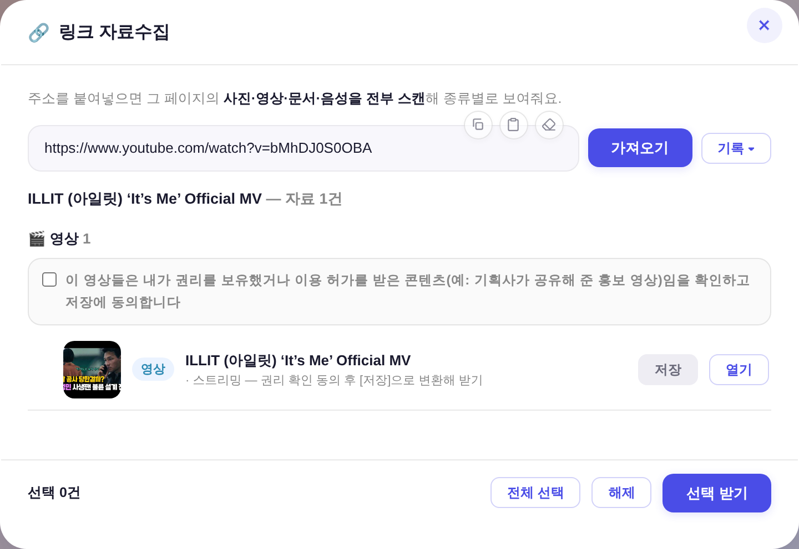
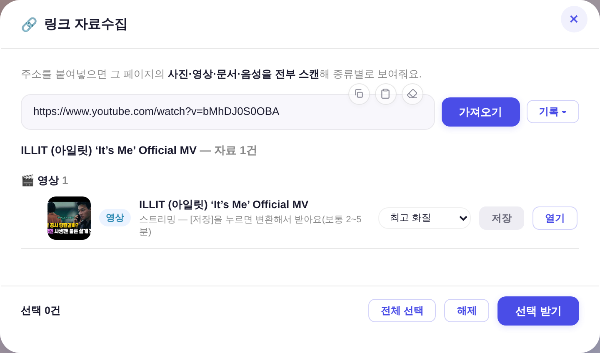
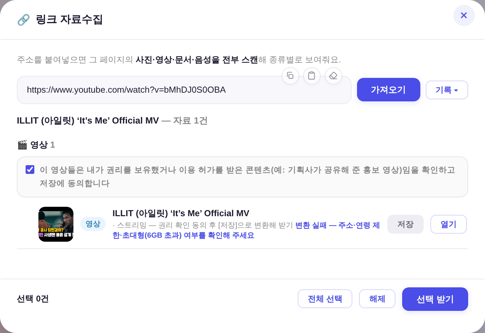
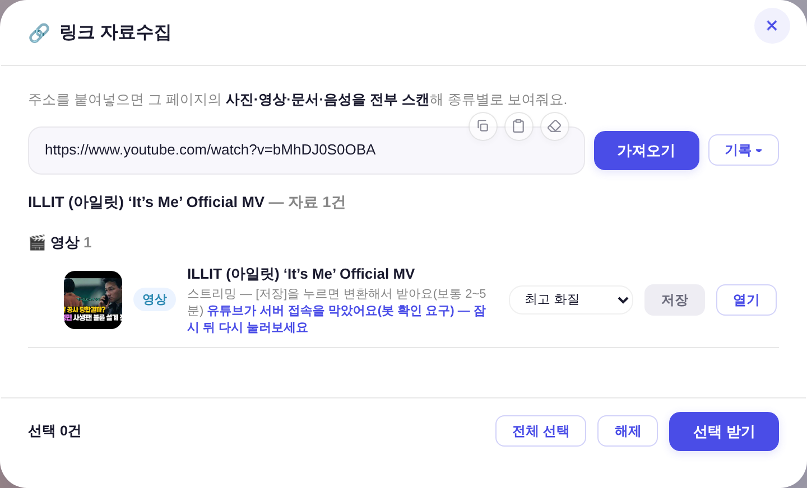

openLinkGrab/_lgRender/_lgYtReq)를 헤드리스로 실구동해 캡처(마크업 재현 0) · 전 = 직전 커밋의 index.html, 후 = 이번 수정본.

.ana-sel을 그대로 썼다(폭은 .modal select{width:100%} 전역을 인라인 width:auto로 상쇄 — #lock-min-select 선례 동일 문법).
서버가 화질을 자산 id 해시에 함께 넣으므로 같은 영상도 화질별로 따로 변환·보관된다(안 넣으면 1080본이 「최고 화질」 요청에 재사용된다).
동의 체크 폐지에 따라 죽은 CSS(.lg-ring 유도 링 953자)와 안내 문구(「권리 확인 동의 후」)도 함께 정리했다. 운영 원칙(권리 보유·이용 허가 콘텐츠 전용) 자체는 유지.

v4c20a248a2f682fa.err.txt 실측):ERROR: [youtube] bMhDJ0S0OBA: Sign in to confirm you're not a bot.
WARNING: No supported JavaScript runtime could be found ...
YouTube extraction without a JS runtime has been deprecated, and some formats may be missing
err.txt 원문을 /api/linkgrab/ytstat이 reason으로 넘기고, 앱 _lgYtReason()이 사람 말로 옮긴다(봇 차단 · DRM · 연령 제한 · 비공개/삭제 · 용량 상한 · 화질 없음 · 라이브 진행 중). 모르는 사유는 지어내지 않고 원문 앞부분을 그대로 보여준다.bgutil-ytdlp-pot-provider deno 스크립트 모드) — GVS PO 토큰 없이는 미디어 URL이 HTTP 403이다. 사전 워밍업 1회를 넣었다(안 하면 첫 호출이 yt-dlp의 15초 타임아웃에 걸려 공급자가 통째로 '없음'으로 떨어진다 — 로컬 실측).web_safari=봇 확인 · tv=DRM). 기본 → web_safari → mweb → tv_simply → android_vr 순으로 성공할 때까지 시도.--remux-video mp4 — 구판은 mp4 고정이라 최고화질 VP9·AV1 판을 통째로 못 봤고, 병합이 mkv로 떨어지면 .mp4로 개명해 내보냈다(확장자가 거짓말하는 파일).YT_COOKIES가 있으면 자동으로 --cookies에 실린다(없어도 동작 = fail-soft). 봇 차단을 확실히 푸는 유일한 수단이라 남겨둔 손잡이.workflow_dispatch 추가 — 봇 차단은 러너 IP에서만 재현돼 로컬 검증이 불가능하다. 이제 손으로 러너에서 바로 돌려볼 수 있다.